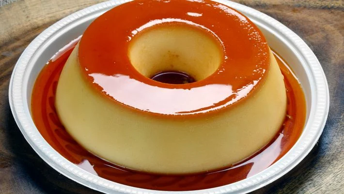

Pudding

Description
A flavored, custard-like dessert made of milk, sugar, and a thickening agent such as egg yolks
or corn starch.
Ingredients
- 1/3 cup sugar
- 2 tablespoons cornstarch
- 1/8 teaspoon salt
- 2 cups milk
- 2 large egg yolks, slightly beaten
- 2 tablespoons butter, softened
- 2 teaspoons vanilla
Step-by-Step
-
In 2-quart saucepan, mix sugar, cornstarch and salt. Gradually stir in milk.
Cook over medium heat, stirring constantly, until mixture thickens and boils.
Boil and stir 1 minute.
-
Gradually stir at least half of the hot mixture into egg yolks, then stir back into hot
mixture in saucepan. Boil and stir 1 minute; remove from heat. Stir in butter and vanilla.
-
Pour pudding into dessert dishes. Cover and refrigerate about 1 hour or until chilled.
Store covered in refrigerator.